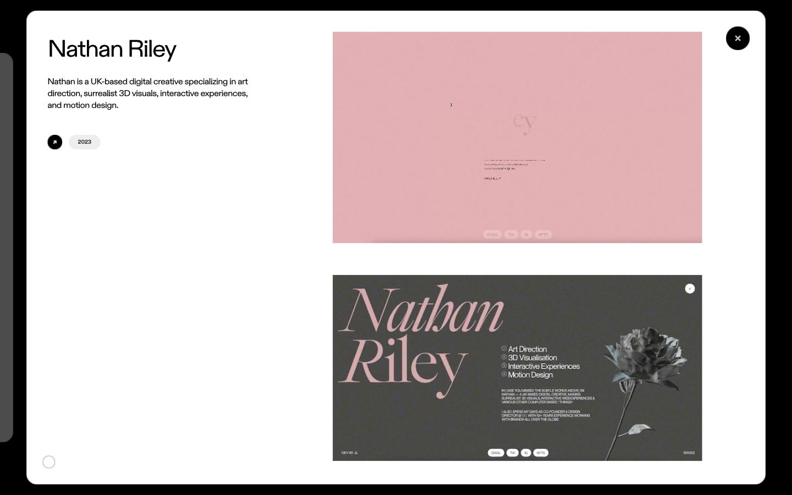
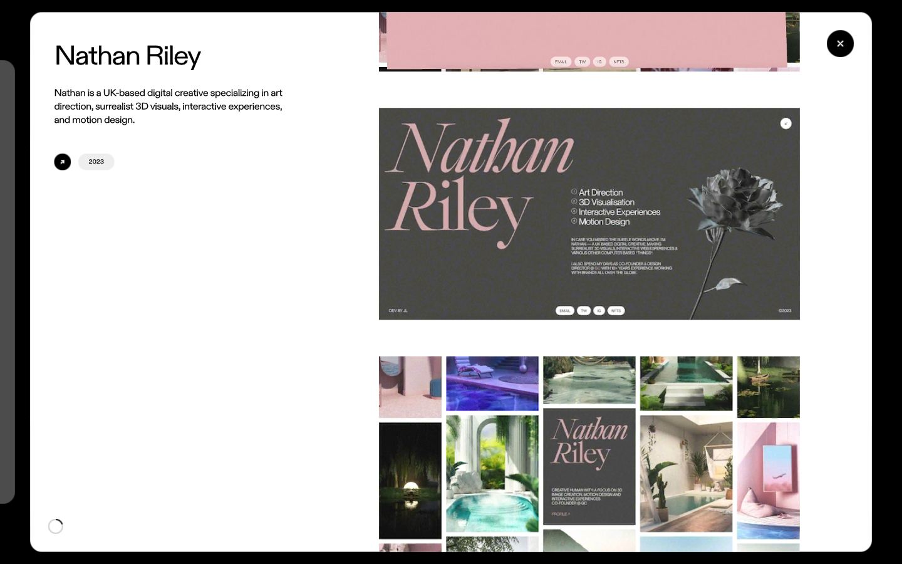
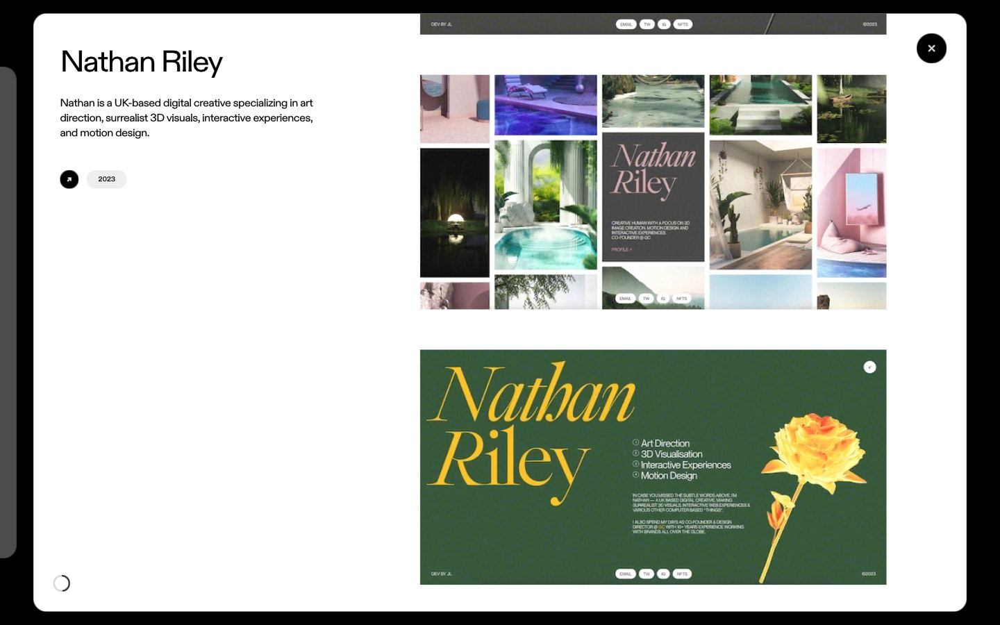
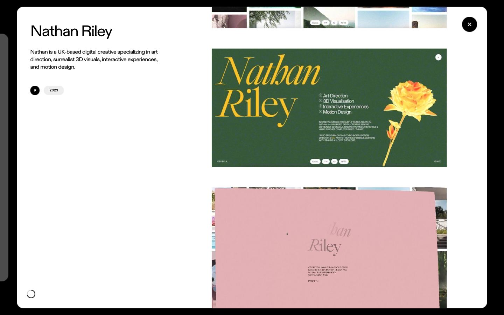
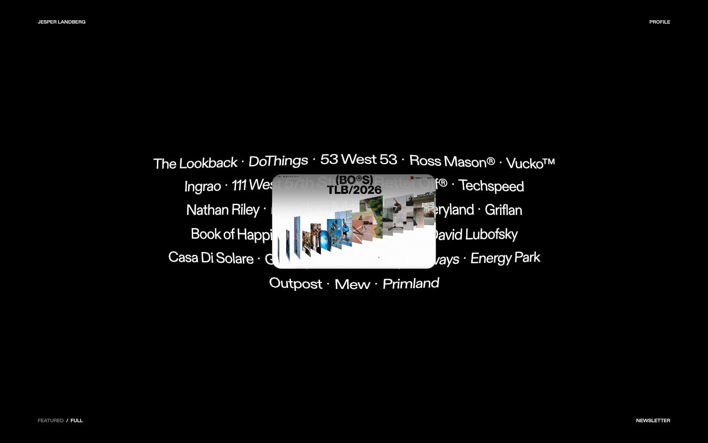
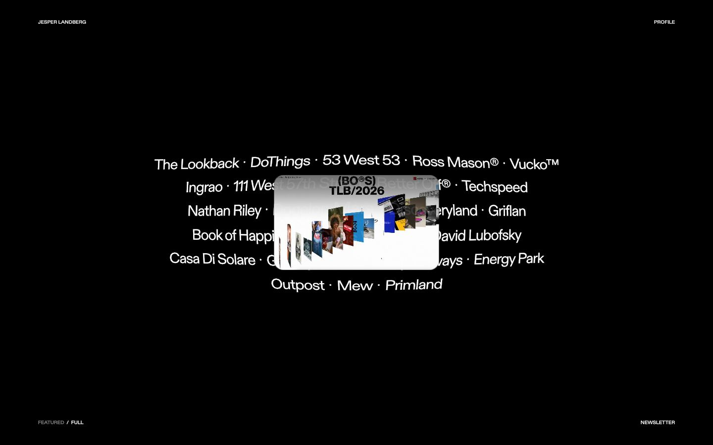
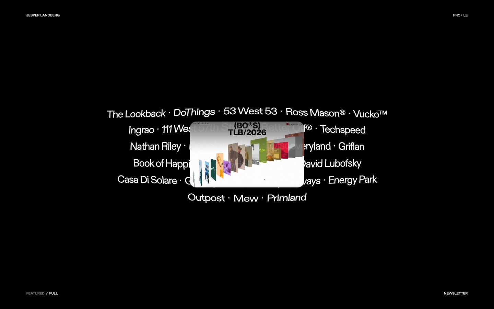
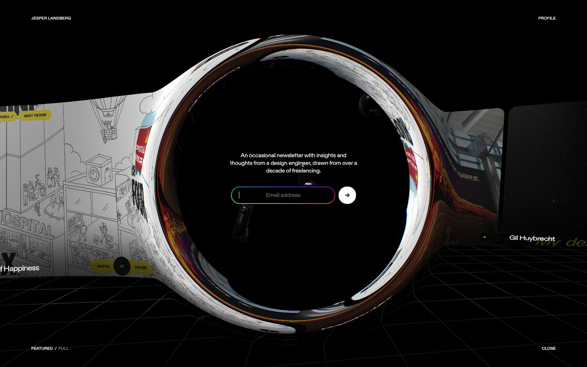
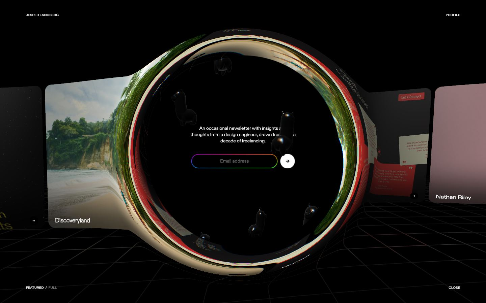
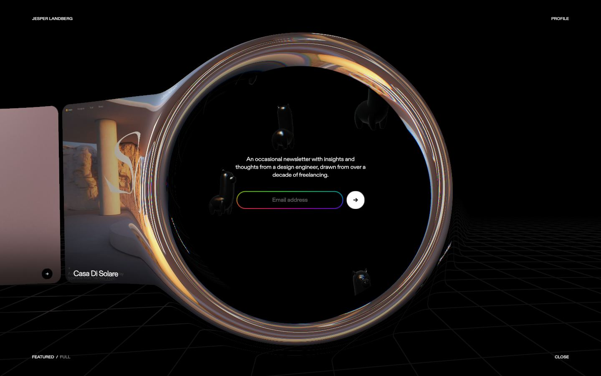

Jesper Landberg
Captures desktop

Pages internes










Mobile
Stack détectée
CMS Datocms, GSAP, Nuxt, ScrollTrigger, SplitText/SplitType, Three.js, Vue, WebGL
Shaders GLSL personnalisés extraits : 23 (voir shaders.glsl)
Design tokens
Couleurs (fonds, pondérées par surface)
Couleurs de texte
#ffffff
Polices utilisées (par volume de texte)
sans
Fichiers de police chargés
Typographie
| Élément | Police | Taille | Graisse | Interligne | Interlettrage | Casse |
|---|---|---|---|---|---|---|
| h1 | sans, sans-serif | 26.88px | 700 | 37.632px | normal | none |
| h2 | sans, sans-serif | 20.16px | 700 | 28.224px | normal | none |
| p | sans, sans-serif | 13.44px | 400 | 18.816px | normal | none |
| a | sans, sans-serif | 13.44px | 400 | 18.816px | normal | none |
| button | sans, sans-serif | 9.6px | 500 | 13.44px | normal | uppercase |
| li | sans, sans-serif | 13.44px | 400 | 18.816px | normal | none |
| body | sans, sans-serif | 13.44px | 400 | 18.816px | normal | none |
Échelle des tailles de texte
13.44px (32) · 9.6px (11) · 17.28px (8) · 20.16px (2) · 26.88px (1)
Arrondis
19.2px · 999px
Transitions CSS fréquentes
Points de rupture (media queries)
650px · 1100px · 1300px · 1400px
Animations CSS (@keyframes)
(aucune)
Variables CSS (:root)
--size: 1500;
Structure de la home
Hauteur : 900 px — 171 nœuds DOM — canvas 1, vidéos 0, images 0
| # | Bloc | Hauteur | Titre | Médias |
|---|---|---|---|---|
| 1 | article .relative w-full s:h-[43.5svh] s:max-h-[5 | 392 | 0 | |
| 2 | article .relative w-full s:h-[43.5svh] s:max-h-[5 | 392 | 0 | |
| 3 | article .relative w-full s:h-[43.5svh] s:max-h-[5 | 392 | 0 | |
| 4 | article .relative w-full s:h-[43.5svh] s:max-h-[5 | 392 | 0 | |
| 5 | article .relative w-full s:h-[43.5svh] s:max-h-[5 | 392 | 0 | |
| 6 | article .relative w-full s:h-[43.5svh] s:max-h-[5 | 392 | 0 | |
| 7 | article .relative w-full s:h-[43.5svh] s:max-h-[5 | 392 | 0 | |
| 8 | article .relative w-full s:h-[43.5svh] s:max-h-[5 | 392 | 0 |
Navigation : Featured · Full
Boutons / CTA :
SEO
Plan des titres
Performance (mesure locale, Chrome headless, connexion non bridée)
Mobile
Fichiers
captures/ : arrivée, scroll desktop (1440×900), pleine page, pages internes, mobile (390×844 @2x) ; vidéo de scroll dans la release GitHub « videos » (lien en haut de fiche)page.html : DOM rendu · styles.css : CSS chargé · scripts/ : JS chargé (index dans _index.json) · shaders.glsl : shaders extraits · rea-bundle.json : analyse REA du bundle (chunks, routes, endpoints)